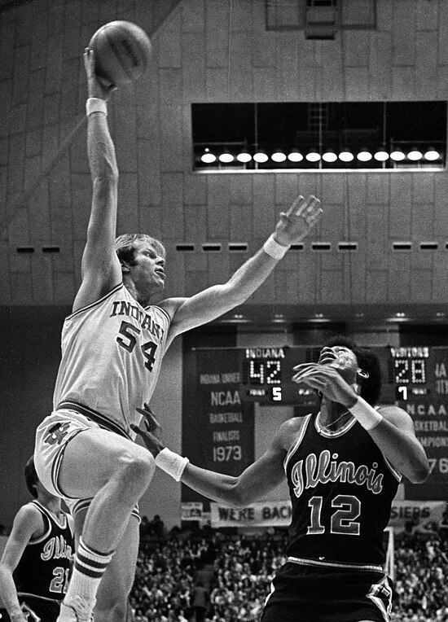

El baloncesto (del inglés basketball; de basket, 'canasta', y ball, 'pelota'), también conocido como básquetbol, basquetbol o simplemente básquet,n. es un deporte de equipo,
jugado entre dos conjuntos de cinco jugadores cada uno en cuatro períodos de cuartos de diez minutos cada uno ―doce minutos cada cuarto en la NBA―.
El objetivo del equipo es anotar puntos introduciendo un balón por la canasta, un aro a 3,05 metros sobre la superficie de la pista de juego del que cuelga una red.
La puntuación por cada canasta o cesta es de dos o tres puntos, dependiendo de la posición desde la que se efectúa el tiro a canasta, o de uno, si se trata de un tiro libre por una falta de un jugador contrario.
El equipo ganador es el que obtiene el mayor número de puntos.
El contacto con las manos junto a la pelota debe de ser continuo y de forma consecutiva.
Los jugadores, también llamados basquetbolistas o baloncestistas, no pueden trasladarse de un lado a otro sujetando la pelota, sino botándola contra el suelo.
El equipo en posesión del balón o atacante, intenta anotar puntos mediante tiros, entradas a canasta o mates, mientras que el equipo defensor busca impedirlo robando la pelota o efectuando tapones.
Cuando un tiro hacia la canasta fracasa, los jugadores de ambos equipos intentan atrapar el rebote.
James Naismith, un profesor canadiense de educación física, inventó el básquetbol en 1891 en la YMCA de Springfield, Massachusetts, Estados Unidos.
El deporte ganó rápidamente popularidad y se expandió por las universidades y colegios norteamericanos a principios del siglo xx.
La Federación Internacional de Baloncesto (FIBA) surgió en 1932 y el deporte debutó en los Juegos Olímpicos de verano en 1936.
En 1946 se fundó la principal liga profesional de los Estados Unidos, la National Basketball Association (NBA), donde se formaron grandes jugadores que contribuyeron a la creciente popularidad
del baloncesto: Wilt Chamberlain y Bill Russell en los años 1960 y, posteriormente, Kareem Abdul-Jabbar, Moses Malone, Larry Bird, Magic Johnson, Kobe Bryant, Stephen Curry, Michael Jordan y
LeBron James, estos dos últimos considerados por muchos como los dos mejores jugadores de la historia.
El baloncesto es uno de los deportes más practicados del mundo, con más de 450 millones de jugadores en 2013.
Se juegan numerosas ligas y campeonatos en el mundo entero, sobre todo en Europa y más recientemente en Asia, donde el deporte ha despuntado en el siglo xxi.
Las mujeres representan una buena parte de los practicantes, a pesar de una exposición menor en los medios del baloncesto femenino.
Se han desarrollado algunas variantes, como el baloncesto en silla de ruedas para deportistas discapacitados, el streetball y el baloncesto 3x3.
Existe una cultura específica surgida a partir del deporte que se expresa en la música, la literatura, el cine y los videojuegos.